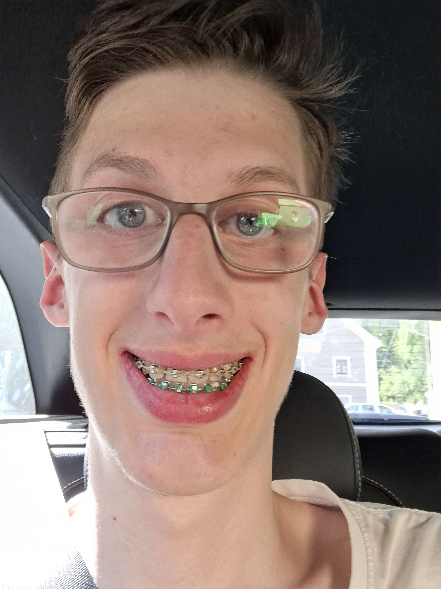

Who am I?

Ik ben Ruben Lukasse, 17 jaar en ik werk bij de McDonalds. Ik heb 2 huisdieren, een hond (Lyla) en een kat (Felix) vaak zit ik binnen en speel ik online games op mijn pc, ook vaak met vrienden. Meestal speel ik dan spellen zoals Roblox en Minecraft, en verschillende spellen op Steam. Ik vind dieren interessant en heb er zelf ook veel gehad zoals kippen, een hamster, een hond en een kat. Vaak spreek ik met mijn vrienden af (online of in het echt) wat ik ook erg leuk vind. Ik vind tekenen ook leuk en doe het soms in mijn vrije tijd, dan teken ik vooral andere tekeningen na sinds ik niet zo goed ben in dat verzinnen. Mijn sterke punten zijn dus dat ik goed ben in gamen en tekenen en er ben voor mijn vrienden wanneer ze me nodig hebben. Ik heb deze opleiding gekozen omdat ik vaak achter mijn pc zit en daar graag een baan van wilde maken, en ik heb programmeren altijd al interessant gevonden sinds ik ook ingewikkelde dingen wil kunnen bouwen met code waarbij andere mensen er niks van snappen. Ik ben meestal stil maar als ik met de juiste mensen ben dan kan ik vrij luidruchtig zijn.
Mijn Tagline
Ik hou van gamen, ik ben betrouwbaar en ik vind plezier hebben met mijn vrienden leuk